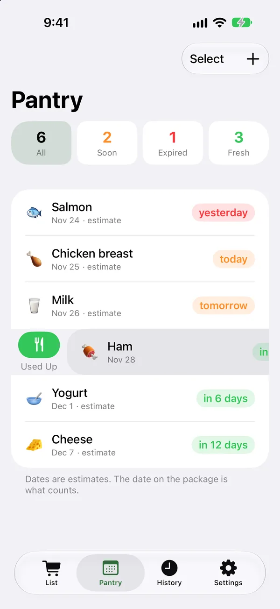
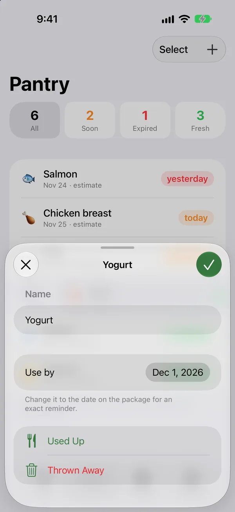

How to track food best-before dates on iPhone
-
Step 1 Open Pantry
Tap the Pantry tab. The All / Soon / Expired / Fresh tiles also work as filters.

-
Step 2 Mark it Used Up or Thrown Away
Swipe right → Used Up, or swipe left → Thrown Away.

-
Step 3 Adjust the date in the details
Tap the food to open its details with the Use by date and the Used Up / Thrown Away buttons. Fix any date marked “estimate” to match the pack – the date on the package is what counts.

Frequently asked questions
Can my family see the Pantry?
Yes, Pantry is shared with your household, so everyone sees what needs eating.
More questions are answered on the Support page.